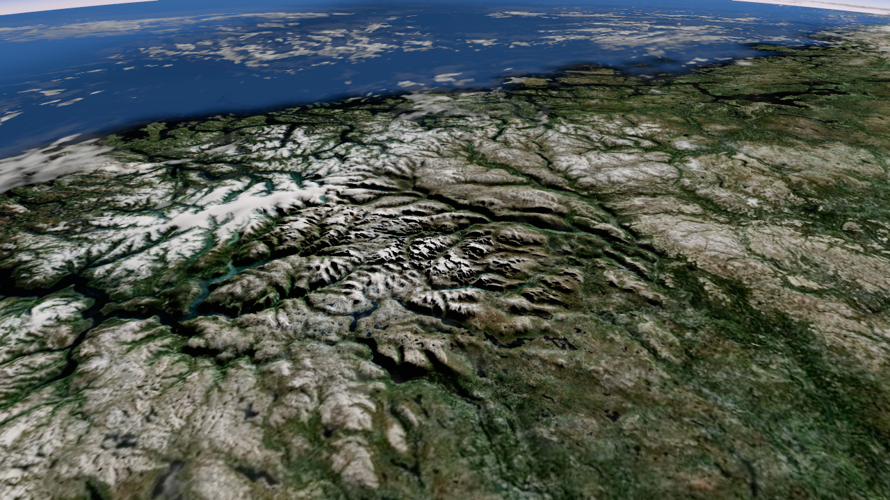
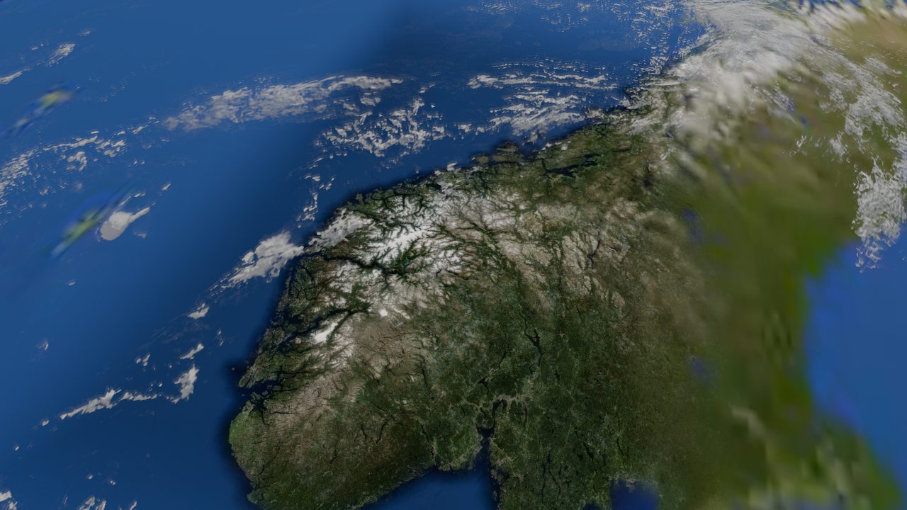
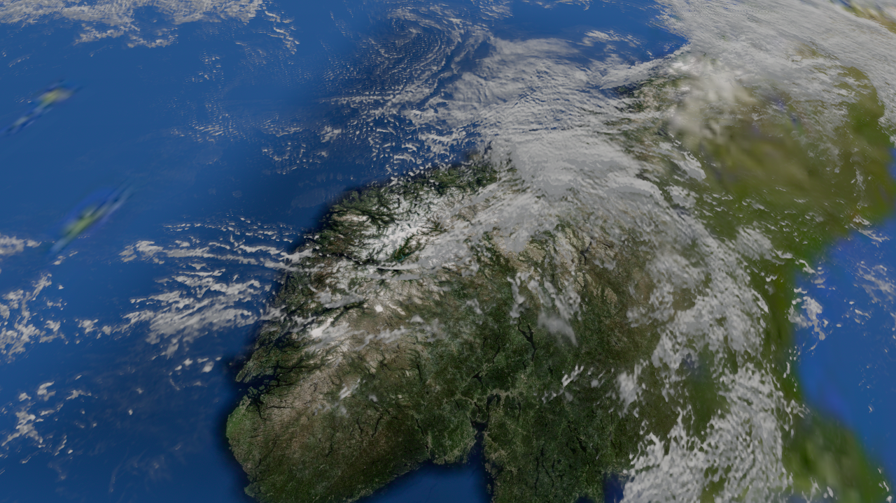

같은 구름 원본·양·카메라·태양·DEM으로 위치만 비교했습니다. 오른쪽은 확대 지형 근처에 배치한 후보입니다. 양은 소폭 증가(.07)로 동일합니다. 위치는 두 구도에 같은 geographic footprint를 사용하며 스크롤에 따라 새로 생성하지 않습니다.
TUNE. 산맥 가까이에 구름이 나타납니다. 가까이서 읽히는 납작한 질감·국소 부피/광학은 다음 보완입니다. Takram 근경 volume 연결과 전체 지형 seam 해결은 아직 미완입니다.


